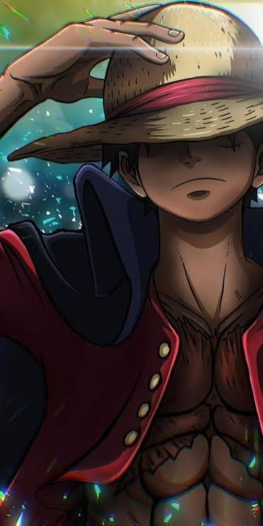

Monkey D. Luffy

Monkey D. Luffy é o fundador e capitão do bando do Chapéu de Palha na GL. Ele comeu a Gomu Gomu no Mi (Hito Hito no Mi, Modelo: Nika).
"Eu não quero conquistar nada. Só acho que a pessoa com mais liberdade neste oceano é o Rei dos Piratas!"
— Monkey D. Luffy